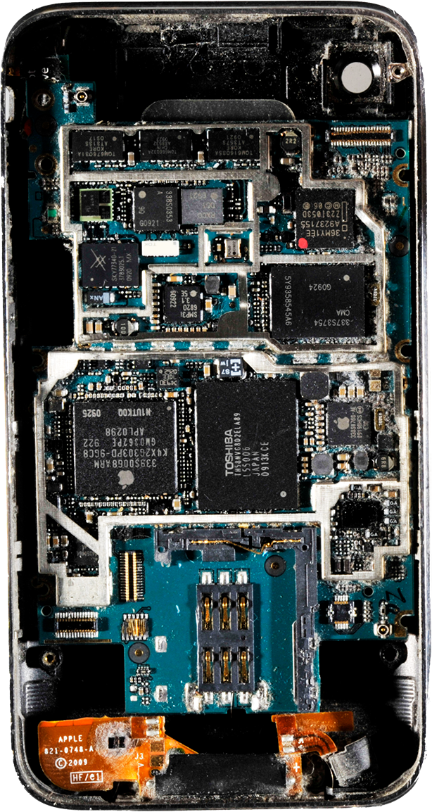

„If the concern with the Anthropocene is that it characterizes humans' de-stratification of billions-year-old fossil fuel and other material layerings from the earth's strata, then landfills and nuclear waste repositories articulate a concern in the opposite direction, with a kind of earthly re-stratification or re-layering.” Myra J. Hird
Der Umgang mit Rohstoffen und Abfällen führt zum Abtragen und Aufbauen geologischer Schichten. Sie sind materialisierter und visueller Ausdruck des Umgangs mit Materie und führten zum heutigen Anthropozän – einem Zeitalter, das geologisch und global gezeichnet ist durch menschliche Praxen der Ausbeutung der Erde.
Es sind Überreste wie aufgeschichtete Schlacke, Elektroschrott, bestehend aus Rohstoffen, die in über Jahrmillionen in geologischen Lagerstätten abgelagert wurden, oder vermischte Materialien in Bauschutt-Deponien. Unumkehrbare Destratifikationsprozesse erfolgen durch die Verwendung von Nanosilber in Convenience-Produkten.
Bertolt Brecht
Jennifer Gabrys
Dietmar Offenhuber
Abfall ist nicht nur das, was immer schon ab-gefallen ist. Er ist auch das, was nicht mehr verschwindet und nicht spurlos «ent-sorgt» werden kann. Etwas bleibt immer übrig. Das Forschungsprojekt Times of Waste beschäftigt sich mit Abfallmaterialien und mit den in die Produktions- und Recyclingprozesse involvierten menschlichen und nicht-menschlichen Aktant_innen. Verfolgt werden die oft verschlungenen Wege, materiellen Transformationen, inhaltlichen und monetären Umwertungen dieser Reststoffe.
Aus der Erdkruste geholte, verwandelte Rohstoffe bleiben bestehen und beginnen, ein Eigenleben zu führen – sei es als recyceltes Material, als Bestandteil einer wilden Deponie oder als neu definierte Komponente in ungeplanten, überraschenden Anwendungen. Wo geht das hin, was übrig bleibt? Welche Prozesse durchläuft es und welche Diskurse und Praktiken sind damit verknüpft? Diese Überreste, ihre Weiterverarbeitung oder Endlagerung sind ein zentraler Fokus des interdisziplinären Forschungsteams.
“Das Übrige ist somit auch in einem topologischen Sinne ‚zwischen zwei Zuständen’ als eine Randzone, die wechselnde Nutzungsinteressen, Operationen und Wertsetzungen anstösst und offenlegt.” Kersten Jens
Rohstoffe werden in Gebrauchsgegenstände transformiert. Ein exemplarisches Beispiel eines solchen Alltagsgeräts ist das Smartphone. Times of Waste verfolgt die Transformationsprozesse des Geräts und seiner Bestandteile und entwickelt eine Objektbiografie, die verschiedene Transportwege und Recyclingrouten kartografiert. Sie erstrecken sich vom lokalen schweizerischen über den europäischen Kontext bis in globale Zusammenhänge, nach Afrika und China.
Bei der Rückverfolgung der komplexen Wege eines Smartphones – von der Produktion bis zum unendlichen Weiter-Existieren seiner Komponenten – zeigt sich, dass der grösste Teil des Abfalls bei der Produktion der Rohstoffe entsteht. Demnach erreicht er die meisten Vertriebsländer der Geräte wie die Schweiz nicht. Ein Smartphone ist somit von Beginn an bereits ‘Abfall’ und setzt die Grenzen zwischen alt und neu, sauber und dreckig, Rohstoff und Endprodukt ausser Kraft: Anfang und Ende konfigurieren sich neu.
Die Auseinandersetzung mit dem Verworfenen birgt die Möglichkeit, die uralte Geschichte des Abtragens und Aufbauens anders anzugehen: Nicht mit der Ideologie eines endlosen Recyclings, sondern in der Konfrontation mit dem, was man als Ab-Fall verworfen hat.
“Artifacts, for instance a smartphone, are not just an instrument, but they are mediators, social agents. Technology, then, can be looked at as a temporary state of things and humans related by a chain of practices.” Astrid Schwarz (Projektworkshop)

„In the context of Times of Waste, we approach a concept of post-anthropocene aesthetics primarily by raising questions about how the entanglements of humans and non-humans could be more egalitarian and effective (than in anthropocene circumstances), how therefore research practices could help overcome representational ‘obstacles’ we face dealing with objects or artefacts, and which aesthetical consequences these practices might have in regards to the results of our research.“
Forschungsteam Times of Waste
© 2018 Times of Waste